|
|
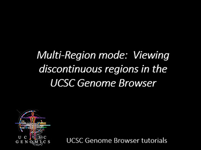
|
This tutorial shows how to obtain coordinates of genes, then input
those coordinates into the Genome Browser for display. The regions
do not have to be continuous in the genome.
Transcript of video
|
|
0:41
- Set the Genome Browser to defaults.
1:00
- Go to the Genome Browser at the hg19 human assembly.
1:21
- Turn on the UCSC Genes track and an RNA-seq track.
3:13
- Get gene coordinates using the Table Browser.
4:27
- Paste list of genes into the Table Browser.
4:55
- Extract coordinates of genes.
5:31
- Reorder gene list and add optional header lines.
6:04
- Get help for Multi-Region mode.
7:24
- Load coordinates into Multi-Region.
run time: 9:05
|
|
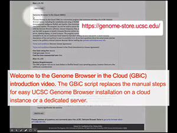
|
This video illustrates how to set up the Genome Browser in the Cloud (GBiC)
|
run time: 4:16
|
|
|
|
|
|
|
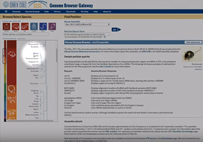
|
This video illustrates the features of the gateway page, which provides access to
all genome assemblies of the UCSC Genome Browser.
|
|
run time: 3:18
|
|
|
|
|
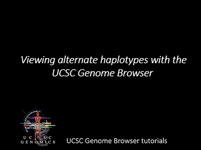
|
This tutorial shows how to use Multi-Region display mode to substitute
alternate haplotypes into the proper place in the genome assembly.
For a more comprehensive review of all the features
of Multi-Region Display, please see the User Guide.
Transcript of video
|
|
0:17
- Set up the Genome Browser display.
0:34
- View alternate sequences.
1:44
- Fetch sequence of right end of alt.
2:55
- Fetch sequence of left end of alt.
3:18
- Blat the alt ends.
4:37
- Substitute alt ends into chromosome.
6:10
- Track lifted from hg19 lacks hg38 annotations on alt.
6:31
- Remove alt from main chromosome.
run time: 7:05
|
|
|
|
|
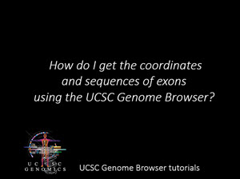
|
This tutorial demonstrates how to retrieve the coordinates and sequences of exons using
the UCSC Genome Browser.
Transcript of video
|
0:33
- Set up the Genome Browser display.
1:25
- Zoom out to region with several genes.
2:20
- Set up Table Browser.
3:00
- Export exon coordinates.
4:06
- View exons as Custom Track.
5:40
- Export sequences of exons.
7:00
- Confirm that the negative-strand sequences are in the correct sense.
run time: 8:12
|
|
|
|
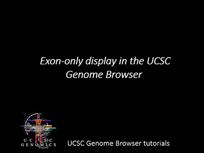
|
This tutorial demonstrates the Multi-Region exon-only display mode of the
UCSC Genome Browser. For a more comprehensive review of all the features
of Multi-Region View, please see the User Guide.
Transcript of video
|
0:31
- Set up the Genome Browser display.
1:04
- Enable multi-region display: Exon-only.
1:34
- View gene with multiple isoforms.
2:11
- Remove non-coding genes from display.
3:10
- View RNA-seq data in exon-only mode.
run time: 5:15
|
|
|
|
|
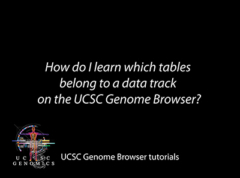
|
This tutorial will demonstrate how to find the tables in the UCSC database that
are associated with the data tracks in the Genome Browser graphical viewer.
Transcript of video
|
0:42
- Set up the Genome Browser display.
1:18
- Turn on data tracks.
2:03
- Find a gene.
2:45
- Find tablename by mouseover.
3:38
- Find tablename by table schema: Use minibutton to access configuration page.
4:33
- Find tablename by table schema: Use track-control link to access configuration page.
4:47
- Find tablename by table schema: Click an individual item.
5:25
- Check contents with Table Browser: All fields.
6:53
- Check contents with Table Browser: Extract selected data fields.
7:25
- Download entire table.
run time: 8:39
|
|
|
|
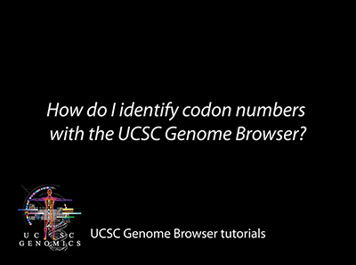
|
This tutorial will demonstrate how to locate amino acid numbers for coding
genes using the UCSC Genome Browser.
Transcript of video
|
0:36
- Set up the Genome Browser display.
1:35
- Open genes tracks: UCSC Genes, RefSeq, GENCODE.
2:17
- Locate your gene and zoom to an exon.
3:26
- Turn on RefSeq track coloring-by-codons.
3:51
- Zoom to codon level.
4:23
- Use minibutton for track configuration: Show codon numbering.
5:16
- Configure composite track.
5:44
- Confirm codon numbers with OMIM AV SNPs and UniProt Variants.
7:14
- View UniProt Variants details page.
run time: 8:02
|
|
|
|
|
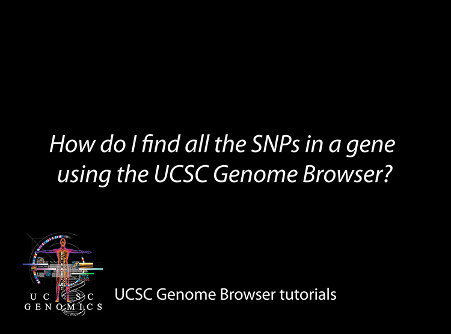
|
This tutorial demonstrates how to find all the single nucleotide polymorphisms
in a gene using the UCSC Genome Browser.
Transcript of video
|
0:43
- Set up Genome Browser display to see your gene.
1:35
- Turn on the SNPs track to see SNPs in your gene.
3:27
- Get SNPs from the Table Browser.
4:36
- Load Table Browser results as a Custom Track.
run time: 6:13
|
|
|
|
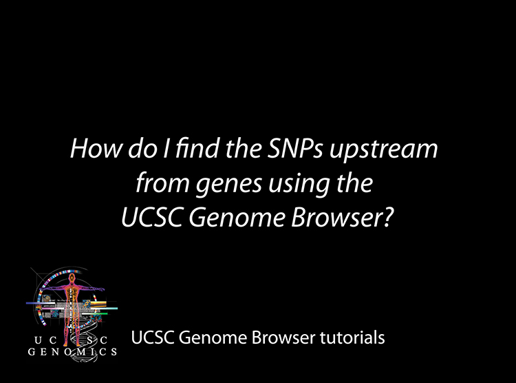
|
This tutorial shows how to find all the single nucleotide polymorphisms
upstream from genes using the UCSC Genome Browser.
Transcript of video
|
0:43
- Set up the Genome Browser display to see your gene.
2:00
- Use the Table Browser to get upstream regions.
3:38
- Paste and view your upstream regions as a Custom Track.
5:23
- Intersect upstream regions with the SNP track.
6:43
- Load upstream SNPs as a new Custom Track.
run time: 8:14
|
|
|
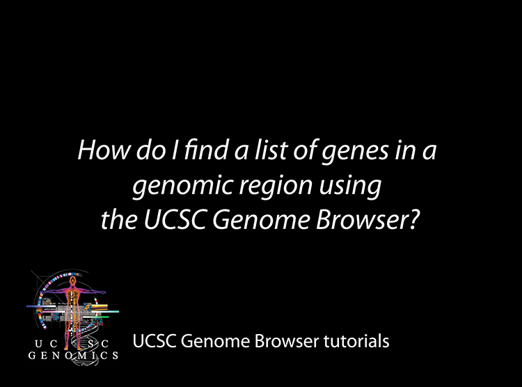
|
This tutorial shows how to use the UCSC Genome Browser to find a list of genes in a
given genomic region.
Transcript of video
|
0:54
- Set up the Genome Browser display to see the genes in your region.
1:31
- Zoom to a cytoband.
1:54
- Display only one isoform per gene.
2:20
- Use the Table Browser to get the list of genes in your region.
3:40
3:40
- Use knownCanonical table in the Table Browser to list only one isoform per gene.
run time: 4:33
|
|
|
|
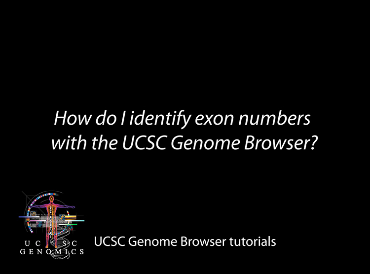
|
This tutorial shows how to navigate between exons of a gene using the UCSC Genome Browser.
Transcript of video
|
1:11
- Zoom to a single exon.
1:55
- Adjust width of graphic display.
2:20
- Highlight a region.
2:39
- Jump to the next exon.
run time: 4:25
|
|
|
|
|